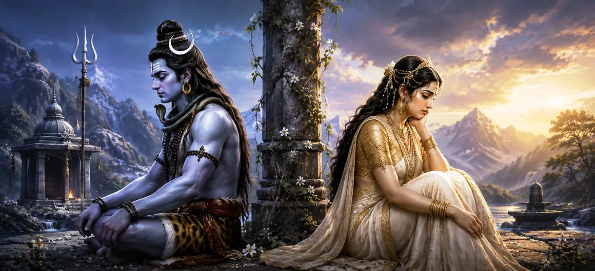

This poignant chapter describes the consequences that followed when Sati tested Lord Rāma despite Lord Shiva’s counsel. Although Sati realized her mistake and understood the divinity of Lord Rāma, a profound change occurred in her relationship with Shiva. The chapter reveals the importance of faith, truthfulness, and spiritual integrity, while illustrating how even a moment of doubt can alter the course of destiny.
After meeting Lord Rāma, Sati returned to Shiva. Though she had realized the greatness of Rāma, she felt uneasy about the test she had performed. Shiva, through His divine awareness, already knew everything that had transpired and understood the deeper implications of her actions.
By assuming the form of Sita, who was revered by Shiva as the Divine Mother, Sati had unknowingly crossed a sacred boundary. Shiva recognized that the purity of their spiritual relationship had been affected by this act. Though He remained compassionate, He also upheld the eternal principles of dharma and truth.
Rather than expressing anger, Shiva entered deep contemplation. He silently resolved that He could no longer regard Sati in the same manner as before. This decision arose not from resentment but from His unwavering commitment to spiritual truth and purity.
Sati gradually sensed the distance that had arisen between herself and Shiva. Though they remained together outwardly, a subtle spiritual separation existed. This realization filled Sati with sorrow, and she deeply regretted allowing doubt to cloud her faith.
Trust in divine wisdom protects seekers from spiritual confusion.
Truth and purity remain essential foundations of spiritual life.
Every action carries consequences that shape one's spiritual journey.
Reflecting upon the events, Sati understood that doubt had led her away from complete trust in both Shiva and Lord Rāma. Her introspection became a powerful lesson in humility and self-awareness, preparing her for the trials that lay ahead.
The separation between Shiva and Sati marked a significant turning point in the narrative of Sati Khanda. The consequences of this event would eventually lead to further dramatic developments, shaping the destiny of both Sati and the cosmic order itself.
The separation of Shiva and Sati reminds us that spiritual growth requires unwavering faith, honesty, and humility. Even sincere seekers can falter when doubt overshadows trust. By learning from Sati’s experience, devotees are encouraged to deepen their faith and remain steadfast on the path of truth.
Despite His deep affection for Sati, Lord Shiva remained firmly devoted to the principles of dharma and spiritual truth. He demonstrated that divine beings uphold righteousness without partiality, even when difficult decisions involve those closest to them. Through His conduct, Shiva taught that truth must always be honored above personal attachment.
Although the separation between Shiva and Sati brought sorrow, it also carried a deeper divine purpose. The trials that followed would eventually lead to spiritual transformation and the unfolding of a greater cosmic plan. This teaches that even painful experiences can become instruments of divine grace and higher realization.
"Where doubt enters the heart, even the strongest bonds are tested; where faith prevails, truth shines eternal."
Continue exploring the sacred events of Sati Khanda as the consequences of doubt unfold further and the story moves toward Dakṣa’s growing hostility toward Lord Shiva.